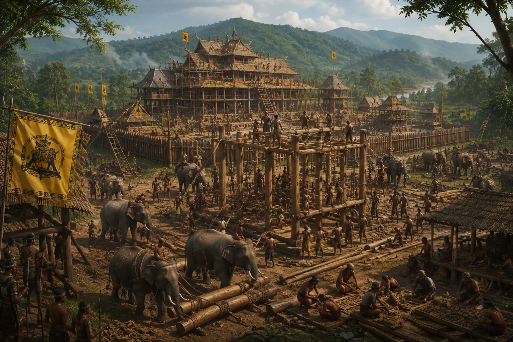

Founding and Construction of the Sacred Capital at Charaideo
1253 · The coming of Sukaphaa

In 1253 CE, Sukaphaa establishes the permanent royal capital at Charaideo (Che-Rai-Doi), consecrated with sacred Tai Phuralong rituals and ancestral invocations.
Sources have not yet been catalogued for this record.
People: Chaolung Sukaphaa